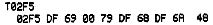
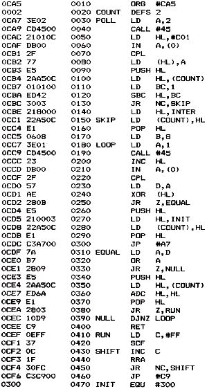

Nascom Journal |
Dezember 1981 · Ausgabe 11/12 |
in den Registern übergeben werden müssen; Beispiel: für „W“ in ARG1, ARG2; für „I“ in HL, DE & BC. Außerdem verändern die meisten Monitor-Routinen (mit Ausnahme von „ROUT“, „RIN“ und so) die Register; z.B. „RKBD“ ändert außer AF auch B, DE & HL.
Na ja, ansonsten ist NAS-SYS 3 ja eine echte Verbesserung (vor allem kann man sich jetzt die Repeat-Routinen sparen) und das fehlende „L“-Kommando zum Eintippen von Hex-Listings mit Prüfsumme kann man ja leicht (und verbessert) selber schreiben.
(Siehe CONMOD in diesem Heft Red.)
von Rüdiger Maurer
Ich möchte hier eine Nassys3-Modifikation vorstellen, die es ermöglicht, bei der Benutzung der T-Funktion die Checksumme auf dem Bildschirm mit aufzulisten, vorteilhaft um ein Zeichen nach rechts versetzt (siehe auch Ausdruck). Ein weiterer Vorteil dieser Modifikation ist der, daß bei der Verwendung des Druckers Seiko GP80 das T-Kommando ebenfalls benutzt werden kann, da das Hex-Zeichen 08 nicht ausgesendet wird, was den Drucker nämlich in den Grafik-Modus schicken würde.
Folgende Bytes sind im Monitor zu ändern:

Mit dieser kleinen Routine simuliere ich die Repeat-Funktion meiner Tastatur. NAS-SYS pollt die Tastatur mit der Routine Nr.61H (KBD). Für jede Zeile der Tastatur-Matrix merkt das System sich die letzte Eingabe in der Workspace. Nur wenn die Eingabe von der Tastatur sich von dem Eintrag in der Workspace unterscheidet, geht das Programm davon aus, daß ein Zeichen eingegeben werden soll. Deshalb muß für jedes Zeichen die Taste einmal gedrückt und wieder losgelassen werden. (Das hat mit der Entprellung durch Software nichts zu tub, die muß außerdem noch gemacht werden.)
Das habe ich nun so geändert, daß bei jedem neuen Niederdrücken einer Taste zusätzlich zu der Ausgabe des Zeichens ein Repeat-Zähler mit 0300H geladen wird. Solange die Taste gedrückt bleibt, wird bei jedem Durchlauf der Routine dieser Zähler dekrementiert. Ist er auf 0 runtergezählt, wird er mit 0080H geladen und das Zeichen wird wieder ausgegeben. Durch die verschiedenen Zählerwerte wird am Anfang länger gewartet, der Repeat kann dann aber ziemlich schnell laufen. Durch Verändern von INIT und INTER (in 0CBFH und in 0CD6H) kann dieses Tempo variiert werden.
Das ganze ist natürlich keine vollständige Keyboard-Routine, sondern der geänderte Anfang der Monitor-Routine. Es wird dann zum Bestimmen des Zeichens etc. absolut in die Routine KBD gesprungen.
Um das Programm nun in NAS-SYS einzubinden, muß eine neue Tabelle der Input Routinen geschrieben werden, in der nur die Nr.76H steht, gefolgt von 00H. Wenn nun der Zeiger $IN (0C75H in der Workspace) auf diese Tabelle gesetzt wird, dann wird nur die vom Benutzer definierte Eingabe Routine abgearbeitet. Dazu muß noch die Adresse unserer Routine bei $UIN (0C7BH) eingetragen werden. Das Umsetzen dieser Tabellen und Zeiger besorgt die Initialisierung, die mit „E 0CFB“ aufgerufen wird.
Weil mit $UIN getrickst wird, führt der „U“ Befehl des Monitors dazu, daß immer 2 Zeichen auf einmal auf dem Bildschirm erscheinen, weil dann nämlich sowohl die Standard- als auch die neue Routine ausgeführt werden. Das Programm beginnt bei mir bei 0CA5H, weil darunter noch die Workspace meines Assemblers liegt.
| Seite 11 von 55 |
|---|